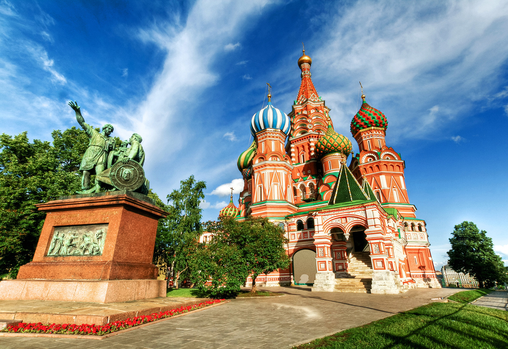

Москва — столица и самый большой город страны. Здесь расположены:
Московский Кремль и Красная площадь (внесены в список Объектов Всемирного Наследия ЮНЕСКО),
Третьяковская Галерея, Музей имени Пушкина, Храм Христа-Спасителя, Богоявленский Собор,
Свято-Данилов монастырь, многочисленные церкви и монастыри, мемориальный ком- плекс на Поклонной горе,
Триумфальная арка на Кутузовском проспекте, Новый и Старый Арбат, Бульварное кольцо, Коломенское,
Гостиный Двор и Манежная площадь, знаменитые «высотки» сталинской эпохи, ВВЦ с «Рабочим и колхозницей»,
зоопарк, «Японский сад» в Ботаническом саду, цирки и известные во всем мире многочисленные театры. В пригородах:
усадьбы Кусково, Архангельское, Царицыно, Абрамцево, город Сергиев Посад, знаменитый расположенным в нем величайшим
в России монастырем — Троице-Сергиевой Лаврой.Помимо Сергиева Посада, в Золотое кольцо России входят города
Александров, Вла- димир, Гороховец, Иваново, Кострома, Муром, Переславль-Залесский, Плес, Ростов, Рыбинск,
Суздаль, Углич, Юрьев-Польской, Ярославль.
Маршрут по ним не оставит равнодуш- ными ценителей древнерусской архитектуры.Северо-восток древнего
Московского государства сказочно богат памятниками истории и культуры, целыми городами-музеями. Эти «каменные летописи»
— создания человеческих рук, свидетели исторических событий, трагедий,
народного героизма.Полвека назад многие из прекрасных архитектурных сооружений были
близки к полному разрушению. Огромной заслугой реставраторов является спасение памятников
и восстановление их былой стройности и красоты. В числе многочисленных па - мятников Золотого кольца:
средневековые Успенский и Дмитриевский соборы, Боголюбово, храм Покрова-на-Нерли во Владимире,
сохранившем фрески Андрея Рублева и Даниила Черного; Владимиро-Суздальский историко-художественный и архитектурный музей-
заповедник, впервые упомянутый в 1024 г. в Лаврентьевской летописи; Ростовский кремль; Ярославские
храмы и монастыри, в одном из которых была найдена рукопись «Слова о пол- ку Игореве»; Ипатьевский
монастырь Костромы и многое другое.
Владимир — это уникальный старинный русский город, где можно познакомиться с настоящей Россией,
увидеть очарование древней архитектуры, бережно сохраненной приро- ды. Во Владимире
Вы осмотрите памятники архитектуры ХII века: Успенский собор, по- строенный князем
Андреем Боголюбским. Дмитровский собор, сооруженный Всеволодом III как дворцовый храм.
В его скульптурном убранстве около полутора тысяч рельефов, знаме- нитые на весь мир Золотые ворота 1164 года,
имевшие оборонное и триумфальное значение при князе Андрее Боголюбском.
Кострома, один из древнейших городов «Золотого Кольца», ведет свое летоисчисле- ние с ХII-го века.
Обзорная экскурсия по городу познакомит Вас с историей и архитектурой Костромы. Архитектурный
ансамбль центра города — один из лучших образцов русского классицизма ХVIII века.
Вы посетите церковь Воскресения на Дебре ХVII века, в которой сохранился уникальный золоченый
резной иконостас ХVII века и знаменитая икона Федоровской Богоматери ХIII век.
Познакомитесь с архитектурным убранством Ипатиевского монастыря и его историей, связанной с династией Романовых.
Суздаль — один из древнейших русских городов, святое место, откуда в 990 году
началось распространение христианства на северо-востоке Руси. Сейчас этот уникальный
город-музей (32 церкви, 5 монастырских ансамблей, 14 колоколен, 280 памятников архитектуры
) включен ЮНЕСКО в список памятников ахритектуры всемирного наследия. Богатейшими
собраниями отличаются суздальские музеи: коллекции древнерусских икон,
уникальное собрание предметов деревянного зодчества, крестьянского быта, народной деревянной резьбы
, белошвейного производства, золотой кладовой. Густые звуки колоколов Спасо-Евфимиевского монастыря не оставят никого равнодушными.
Программа тура
Прибытие в Суздаль. Хлебом, солью и ароматным чаем встретит Вас фольк- лорный ансамбль.
Вы почувствуете себя желанным гостем в главном туристическом ком- плексе Суздаля, расположенного
в излучине реки Каменки. К Вашим услугам 1-2-х местные номера, 2-х комнатные люксы и 3-х комнатные апартаменты,
ресторан на 400 мест с евро- пейской и русской кухней. Ужин в ресторане.
Завтрак в ресторане. Экскурсия по городу с посещением музеев. Обед в ресто- ране.
Катание на лошадях, фольклорные игры. Ужин в охотничьем домике.
Завтрак в ресторане. Посещение церквей и монастырей Суздаля. Обед в ресто- ране. Сеансы сауны с бассейном (за дополнительную плату). Свободное время. Ужин в рес-
торане. Дискотека. Завтрак в ресторане. Отъезд.
Архангельск - начальный пункт многих полярных экспедиций, одна из основных баз Северного морского пути и один из самых самобытных русских городов. Город сла- вится своими музеями и уникальной природой. Поблизости расположены Пинежский запо- ведник, Соловецкий историко-архитектурный и природный музей-заповедник на одноимен-
ных островах в Белом море.
В 2002 году мировой памятник русской истории и культуры — фрески Дионисия в Ферапонтовом монастыре (Вологодская область) отметил свое 500-летие. Ферапонтовские росписи — единственные сохранившиеся самые ранние стенописи Древней Руси. Среди всех памятников православного круга стенописи дошли до наших дней в полном объеме без из-
менений. Их создатель — известный живописец Дионисий стоит в одном ряду со своими знаменитыми современниками Микеланджело и Рафаэлем, достойно представляет Древнюю Русь во Всемирном культурном наследии. В 2000 году ансамбль монастыря включен в спи - сок ЮНЕСКО.
Санкт-Петербург получил за свой историко-архитектурный ансамбль звание «Север- ной Венеции». Музеи: Эрмитаж, Петропавловская крепость, Русский, Кунсткамера, им. Пушкина и другие, 16 профессиональных театров (в том числе знаменитый Мариинский). Соборы — Казанский, Никольский, Исакиевский, Спаса-на-Крови, Александро-Невская Лавра. Здесь похоронен великий русский полководец А.В.Суворов. Около Троицкого собора Лавры — два некрополя XVIII и XIX веков, где покоятся великие русские ученые, мастера искусств и государственные деятели. Другие достопримечательности: Адмиралтейство, стрелка Васильевского острова со зданием Биржи, Дворцовая площадь с Зимним Дворцом, Александровской колонной и аркой Главного штаба, площадь Декабристов (бывшая Сенат- ская) с памятником Петру I («Медный всадник», открыт в 1782 г.), Смольный. Уникален ан- самбль Невского проспекта — Казанский собор, улица зодчего Росси и площадь Островско